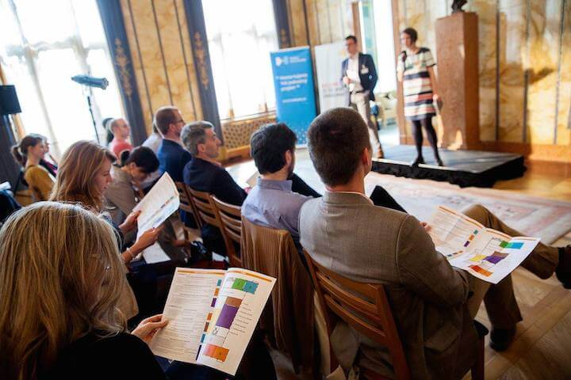
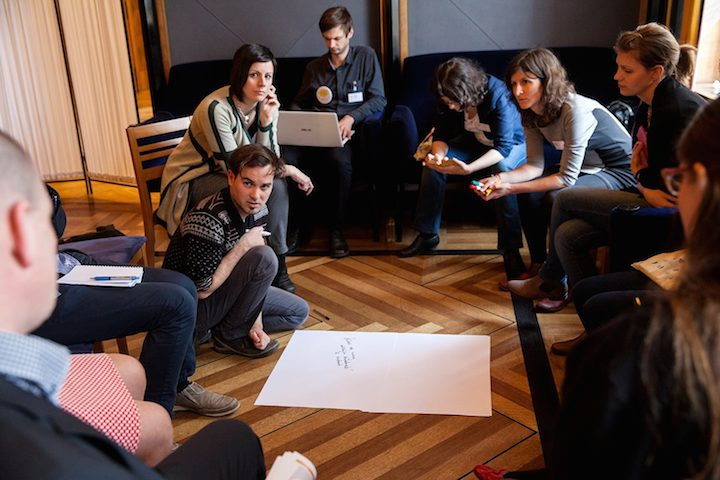

MAPA SOCIÁLNÍCH INOVÁTORŮ
Sociální inovátoři jsou lidé, kteří svým podnikavým duchem systémově řeší ty nejpalčivější problémy společnosti. Přicházejí s inovačními řešeními, která od základů mění celé oblasti lidské činnosti. Díky své vytrvalosti, podnikavosti a kreativitě se tak stávají hybateli společenských změn. My jsme se je pokusili zmapovat.
Mapováním hybatelů společenských změn lze lépe pochopit, jak pracují a jak je efektivněji podporovat. Mapa ukazuje nejen jednotlivce, ale dává zprávu o ekosystému včetně jeho silných a slabých míst.
Ashoka proto za pomoci Nadace Karla Janečka a rakouské analytické agentury FAS research uskutečnila na přelomu let 2014 a 2015 mapování také v České republice. Oslovila klíčové aktéry v daných oblastech a metodou sněhové koule od nich získávala doporučení na další významné inovátory, experty a podporovatele společenských změn.
Kdo je na mapě?
Vytvořená mapa není úplným výčtem hybatelů společenských změn, ani žebříčkem jejich úspěšnosti. Z počtu nominací však lze usuzovat míru vnímání jejich významu okolím. Proto čím více nominací inovátor získal, tím větší bod mu odpovídá na mapě. Umístění více v centru potom znamená, že osoba nebo instituce funguje více v průřezu tématy.
Ashoka oslovila pět set osob ve čtyřech tematických oblastech: (1) posilování občanské společnosti, transparence a místní rozvoj, (2) vzdělávání, výchova a podpora zájmu o vědu a výzkum , (3) zdravý životní styl, zdravá výživa a přístup ke zdravotní péči a (4) sociálně-ekonomická inkluze.
Odezvu získala od 310 z nich a z následných rozhovorů vzešlo 1840 nominací.
K čemu mapa slouží?
Pro sociální inovátory i jejich podporovatele se mapa stala užitečným vodítkem k tomu, kam strategicky upřít svou pozornost.
Pro Ashoku se toto mapování stalo prvním krokem na cestě k analýze bariér a potřeb hybatelů společenských změn v České republice. Jejím cílem je zapojit rozmanité aktéry do společného vytváření podpůrného ekosystému, v němž mohou růst a rozvíjet se všichni, kdo mohou přispět ke společensky prospěšným změnám.
Více o pozadí, praktických přínosech a zjištěních z mapování sektoru sociálních inovátorů naleznete v tomto článku.

Sonda do ekosystému sociálních inovací
Mapování hybatelů změn nám umožnilo v základní míře identifikovat sociální inovátory v České republice. Organizace Ashoka, která se po celém světě zabývá vyhledáváním a podporou hybatelů systémových změn, na mapování navázala v roce 2016 analýzou jejich překážek a potřeb.

Ashoka ve spolupráci s Ministerstvem práce a sociálních věcí (MPSV) zpracovala sondu do výzev a bariér, které před hybateli aktuálně stojí.
Prostřednictvím strukturovaných rozhovorů s pětadvaceti předními sociálními inovátory i jejich podporovateli se podařilo identifikovat devět zásadních problémů na cestě za společenskými změnami.
Patří mezi ně (1) nedostatečná orientace na společenský dopad a kapacita ho sledovat nebo dokonce měřit, (2) nezkušenost s advokační činností, (3) slabá schopnost sebeprezentace, (4) nízce rozvinutá spolupráce s veřejnou správou, (5) malá diverzifikace finančních zdrojů, (6) neuspokojivé příležitosti ke sdílení a síťování, (7) rozdílné či nejasné chápání základních pojmů jako systémová změna či sociální inovace, dále (8) nevyužitý potenciál spolupráce mezi hybateli změn a světem byznysu a (9) chybějící podpora osobního rozvoje.
Celé znění sondy naleznete zde.
Vznik iniciativy
Logickým krokem bylo nastartovat iniciativu, která propojí hlavní aktéry s cílem tyto bariéry společně odstranit na systémové úrovni. Tedy jak formou sdíleného či kolektivního dopadu vytvářet prostředí, v němž se bude dařit růstu a rozvoji společensky prospěšných změn.
Takto vznikla Ze:mě změny – iniciativa desítek organizací i jednotlivců, kteří přijali pozvání systémově zlepšovat prostředí pro sociální inovátory v České republice.
14. dubna 2016 se sešlo více než 120 klíčových aktérů na poli sociálních inovací. Nad výstupy Sondy (link) se odehrálo sedm workshopů a jejich výsledkem jsou konkrétní iniciativy k odstranění bariér v ekosystému sociálních inovací.
Více o setkání Ze:mě změny 2016 najdete zde.
Účastníci a účastnice „Ze:mě změny“ společně hledali řešení nad těmito tématy:
SLEDOVÁNÍ A FINANCOVÁNÍ DOPADU: JAKÉ PODPŮRNÉ MECHANISMY POTŘEBUJEME V ČR? |
Debata se věnovala důvodům, proč sledování dopadu ještě stále není samozřejmou součástí práce sociálních inovátorů, jak může sledování dopadu pomoci při financování inovací, jak vypadá aktuální situace v ČR a jak společnými silami zaplnit zmíněné mezery. |
SPOLUPRÁCE S VEŘEJNOU SPRÁVOU A PŘIPRAVENOST VEŘEJNÉ SPRÁVY NA ABSORBCI INOVACÍ | Účastníci se zaměřili na téma potenciálu veřejné správy při podpoře sociálních inovátorů, jak může pomoci škálovat inovační řešení a jakým způsobem lze zlepšit propojení představitelů veřejné správy mezi sebou i směrem k hybatelům změn. |
POSÍLENÍ POVĚDOMÍ O HYBATELÍCH SPOLEČENSKÝCH ZMĚN, PR A SEBEPREZENTACE INOVÁTORŮ | Diskuse se zaměřila na důvody, proč a jak je potřeba zvyšovat povědomí o sociálních inovátorech a jejich činnosti v ČR, jak mohou napomoci média a jakou roli přitom může hrát koncept „Solutions Journalism“. |
ADVOKAČNÍ ČINNOST PRO SYSTÉMOVOU ZMĚNU | Workshop se věnoval významu advokační činnosti v souvislosti s dosahováním systémových změn, zda mají čeští sociální inovátoři v této oblasti dostatek podpůrných prostředků a jaká je role donorů. |
VYSOKÉ ŠKOLY A SOCIÁLNÍ INOVÁTOŘI | Cílem workshopu bylo mimo jiné zjistit, jaké zkušenosti mají české vzdělávací instituce s výukou o hybatelích společenských změn a jejich činnosti a jak lépe propojit potenciál akademické sféry s potřebami sociálních inovátorů. |
PÉČE O LÍDRY V ČR: PROSTŘEDÍ PRO ROZVOJ, SDÍLENÍ A PODPORU | Účastníci workshopu se zabývali vzdělávacími a seberozvojovými příležitostmi pro sociální inovátory v ČR spolu s tím, zda je potřeba více rozvinout příležitosti k propojení, sdílení PODPORU zkušeností a společnému řešení výzev napříč sektory. Došlo také na téma wellbeingu sociálních inovátorů. |
O iniciativách, které se zrodily a rozvinuly na platformě „Země změny“ se dočtete více zde
Moc sdíleného dopadu
V dubnu 2016 se na setkání „Ze:mě změny“ propojilo více než 120 významných aktérů na poli sociálních inovací a podpory hybatelů společenských změn. Společně hledali řešení, jak odstranit hlavní bariéry na cestě k rozvoji a růstu sociálních inovací v Česku. Myšlenka sdíleného či kolektivního dopadu přinesla své ovoce.

Na setkání se zrodilo a rozvinulo několik konkrétních projektů a aktivit, které usilují o řešení nedostatků či bariér v „Zemi změny“, tedy v českém ekosystému podpory pro hybatele systémových, společensky prospěšných změn.
JAKÉ VÝSLEDKY ZATÍM PŘINESLA INICIATIVA „ZE:MĚ ZMĚNY“?
Aktivity zrozené díky Zemi změny nebo na jejím orbitu odpovídají na specifický systémový problém, který hybatelé změn v předcházejícím roce identifikovali prostřednictvím již zmíněné sondy. Nositeli těchto aktivit jsou v některých případech jednotlivé organizace, jindy jejich koalice a samozřejmě jednotlivci. Některé z nich se během jediného roku přerodily do pevně ukotvených projektů, které se již rozběhly, nebo v nejbližší době zahájí svou činnost. Jiné jsou ve stádiu zrodu.
Tyto aktivity se představí na druhém setkání Ze:mě změny 4. května 2017 a bezprostředně po jeho konání i zde na těchto stránkách.
Pokud vás zaujal kolektivní proces cílený na vytváření prostředí, které přeje hybatelům změn, kontaktujte nás prostřednictvím tohoto formuláře.